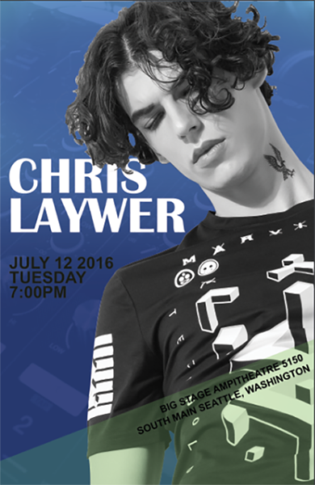
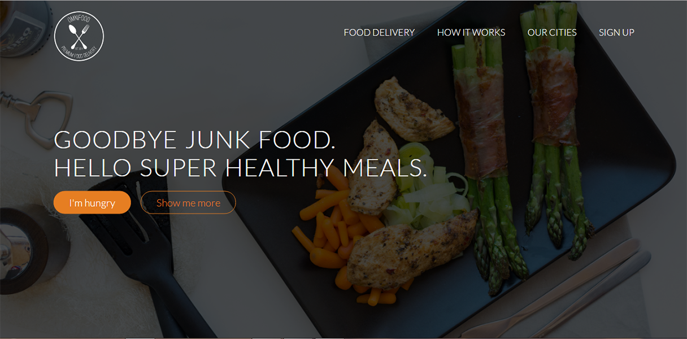
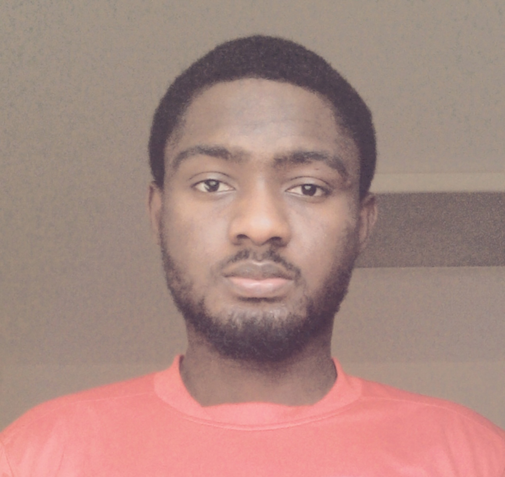

I've got what is takes to create what people call a masterpiece...
UI/UX
I sketch, wireframe and prototype user interfacess focusing on the user experience, content structure, UI design patterns. I will take your project from analyzing user stories - personas - protoype and finally to design and implementation.
Graphics
There are three responses to a piece of design – yes, no, and WOW! Wow is the one i aim for. I design clean and beautiful 2D and 3D graphics ranging from postals - banners - business card to 3D models and a bit of animations.
Development
I'm a full stack mobile and web developer, i design and build applications either from scratch or edit an existing applictions. Clean and maintainable code is what i aim for.
Gallery


About me

Adams Abdulmajid
A full stack mobile and web developer with a great passion for building and designing things. I live in the UAE, have a Honors degree in Information Technology from Middlesex University Dubai. I love everything about tech, playing soccer and building games with unity3D on the side.
Well who knows maybe oneday i would become a game developer ):


Alberto Silva
Adams Zubair